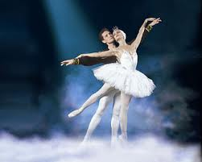

Ο χορός είναι μορφή καλλιτεχνικής και αθλητικής έκφρασης η οποία γενικά αναφέρεται στην κίνηση του σώματος, συνήθως ρυθμική και σύμφωνη με τη μουσική. Είναι ένας τρόπος επικοινωνίας μέσω του σώματος. Έτσι μπορούν να εκφραστούν διάφορα συναισθήματα.
Ο χορός ως Τέχνη φαίνεται να έχει εγκολπωθεί στην κουλτούρα πολλών οργανωμένων κοινωνιών σε πολλά μέρη του κόσμου, αρκετές χιλιετίες π.Χ. Ωστόσο, όσον αφορά την Ευρώπη, τα θεμέλια του χορού φαίνεται να έθεσαν οι αρχαίοι πολιτισμοί της Ελλάδας και της Ρώμης.
Ειδικότερα για τον Ελλαδικό χώρο, με αφετηρία το Μινωικό Πολιτισμό επηρεάζονται και οι κοινωνίες της ηπειρωτικής Ελλάδας. Στην κλασική περίοδο του 5ου π.Χ αιώνα με επίκεντρο την Αθήνα, στην ακμή των γραμμάτων και των τεχνών, θέση ανάμεσά τους φαίνεται να κατέχει και ο χορός. Η ιδιαιτερότητα της τέχνης του χορού σε συνδυασμό με τα μέσα της εποχής δεν επιτρέπουν την ακριβή γνώση του είδους του χορού που άκμαζε εκείνη την περίοδο, μολονότι είναι βέβαιο πως κατείχε ιδιαίτερη θέση στο πολιτισμικό γίγνεσθαι , εγκολπωμένος μάλιστα-εκτός των άλλων- και στο θρησκευτικό τελετουργικό της εποχής (η Τερψιχόρη αποτελούσε τη Θεά του χορού). Επίσης, φαίνεται να υπάρχει μια στενή σύνδεση του χορού, τόσο με την μουσική, όσο και την ποίηση.
Κατά την ελληνιστική περίοδο, η διάδοση του ελληνικού πολιτισμού επεκτείνεται και στη Μεσογειακή λεκάνη, όπου εκείνα τα χρόνια θεωρούνταν αναπόσπαστο κομμάτι της Ευρώπης.
Οι ελληνικές επιρροές και ο συγκερασμός των δύο αρχαίων πολιτισμών, αρχικά μοιάζει να ευνοεί την τέχνη του χορού, ως αναπόσπαστο κομμάτι της παιδείας, γεγονός που φαίνεται να αλλάζει με την πάροδο των αιώνων, όταν οι Ρωμαίοι αρχίζουν να δίνουν μεγαλύτερη έμφαση στο Θέατρο. Ειδικότερα δε, στο μ.Χ αιώνες της αυτοκρατορίας, ο ρόλος του χορού έχει υποτιμηθεί σε βαθμό παρακμής, γεγονός στο οποίο συνέβαλε και ο ρόλος της εκκλησίας.
Σε όλη τη διάρκεια του Μεσαίωνα με επίκεντρο την καθολική Δυτική Ευρώπη, με εξαίρεση τους κυκλικούς χορούς (carole) που ήταν αποδεκτοί σε όλη την πυραμίδα της κοινωνικής ιεραρχίας, οι υπόλοιποι τελούν σχεδόν υπό διωγμό, γεγονός που ενίσχυε και ο αφορισμός τους από την καθολική εκκλησία. Ωστόσο, από τους κυκλικούς χορούς φαίνεται να προέκυψε ο χορός σε ζευγάρια, με την αρωγή των τροβαδούρων.
Στα χρόνια της Αναγέννησης τελείται η μετάβαση από το χορό της Αυλής στο Μπαλέτο της Αυλής, το οποίο χαρακτηρίζεται από απλότητα και ομορφιά. Έκτοτε και μέχρι τη Γαλλική Επανάσταση, ο χορός περνά από διάφορες «μεταμορφώσεις» ενώ σε αρκετές περιπτώσεις σκοπός του ήταν η εξύμνηση των κρατούντων. Μεγάλη επιρροή, μοιάζει να ασκεί η κομμέντια ντε λα αρτέ.
Τον 18ο αιώνα, κυρίως στις τάξεις της αριστοκρατίας, συνυπάρχουν δύο ανταγωνιστικές μεταξύ τους «σχολές», οι virtuosi και το «μπαλέτο δράσης», οι οποίες σταδιακά άρχισαν να αλληλοεπηρεάζονται δίνοντας νέες συνθέσεις. Στην ιστορία του χορού της περιόδου, έχουν καταγραφεί μεταξύ άλλων, διάσημα ονόματα όπως οι: JohnWeaver, MarieSalle, FrantzHilverding, GaspasoAngiolini και Jean-GeorgesNoverre.
Tους προηγούμενους ακολούθησαν αρκετοί άλλοι, όμως από την άποψη της εισαγωγής καινοτομιών στο στυλ και την τεχνική, οφείλουμε να αναφέρουμε τους: JeanDauberval (χορευτή και χορογράφο στην Όπερα του Παρισιού), o οποίος θεωρείται και εμπνευστής της μοντέρνας κωμωδίας μπαλέτου και, τον Charles-LouisDidelot (χορευτή και δάσκαλο μπαλέτου), ο οποίος-κατά πολλούς- αποτελεί τον πατριάρχη της ρώσικης σχολής μπαλέτου.
Στα ταραγμένα χρόνια της Γαλλικής Επανάστασης και των επίσης έντονων ιστορικά δεκαετιών που ακολούθησαν, το μπαλέτο κατασταλάζει από τεχνικής άποψης σ’ αυτό που γνωρίζουμε ως τις μέρες μας. Φαίνεται πως η Επανάσταση δεν ανέτρεψε μόνο πολιτικά τη μοναρχία και άλλαξε τους συσχετισμούς υπέρ της αστικής τάξης και εις βάρος της παλιάς Αριστοκρατίας, αλλά επέδρασε ακόμα και στο μπαλέτο αποβάλλοντας τις τεχνικές των ευγενών. Ωστόσο, σύμφωνα με την Κάτια Σαβράμη απωλέσθη και μια μακρά παράδοση με αφετηρία την αρχαία Ελλάδα και τα χρόνια του Πλάτωνα. Αυτή ήταν η αντίληψη πως «ο χορός ήταν δώρο των Θεών και αποτελούσε αντανάκλαση της ουράνιας αρμονίας». Στο εξής, η αντίληψη αυτή αντικαταστάθηκε από την «τάση για απόδραση, την επίπονη εκπαίδευση και τα τεχνάσματα του μπαλέτου του 19ου αιώνα».
Η δριμύτητα του κινήματος δε θα μπορούσε να αφήσει ανεπηρέαστο το μπαλέτο. Σχεδόν όμοια με τους λογοτεχνικούς ήρωες του ρομαντισμού, η χορεύτρια αποκτά τα χαρακτηριστικά της απόκοσμης και της πνευματικής και συνάμα τελειοποιεί την τεχνική της. Τη συγκεκριμένη άποψη δείχνει να συμμερίζεται και η Κάτια Σαβράμη, η οποία βλέπει μια ταύτιση από πλευράς θεματολογίας μεταξύ Λογοτεχνίας και Μπαλέτου, ενώ η σκηνογραφία είναι παρόμοια με το φόντο των ρομαντικών μυθιστορημάτων. Συνάμα εντοπίζει μια αλληλεπίδραση με την ανερχόμενη και διευρυνόμενη μεσαία τάξη, στην οποία εν πολλοίς απευθύνονταν. Η MarieTaglioni νοηματοδοτεί την έννοια της μπαλαρίνας στην σύγχρονη εκδοχή της. Δηλαδή, αποτελεί το πρότυπο επαγγελματία, όπου τα παιδικά χρόνια και η εφηβεία είναι αφιερωμένα-σχεδόν αποκλειστικά- στην εκμάθηση και εξάσκηση του χορού. Άλλες καινοτομίες της εποχής αποτελούν «οι βελτιωμένες μέθοδοι διδασκαλίας του μπαλέτου, όπως αυτή του AugusteVestris”, που θεμελιώνουν ένα «πιο ποιητικό είδος χορού», η κατάργηση του χωρισμού των χορευτών σε genres (είδη) και κυρίως, η χρήση pointes (πουέντ,/). Κέντρο του Ευρωπαϊκού μπαλέτου της εποχής θεωρείται το Παρίσι.
Ιδιαίτερη άνθηση γνωρίζει το μπαλέτο στην τσαρική Ρωσία, με κορύφωση κατά τον 19ο αιώνα, όπου η ιδιαίτερη ταυτότητά του αναγνωρίζεται διεθνώς και η παράδοση συνεχίστηκε και επί Σοβιετικής Ένωσης.
😀